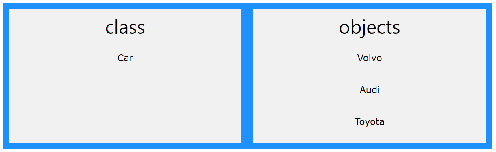
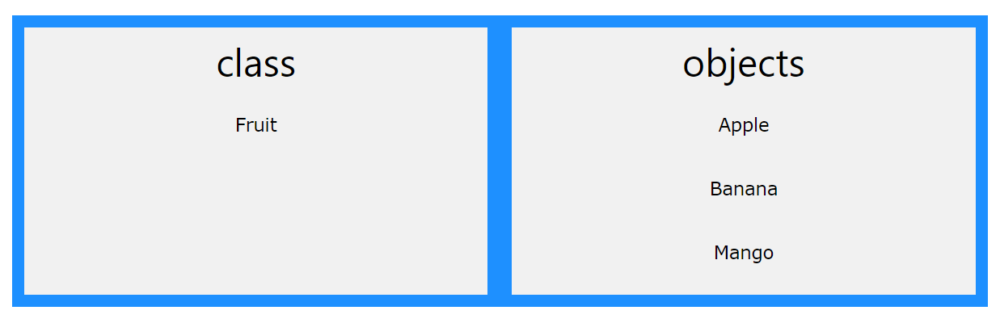

Chapter 17: C++ Object Oriented Programming [OOP]
Procedural programming is about writing procedures or functions that perform operations on the data, while object-oriented programming is about creating objects that contain both data and functions.
Object-oriented programming has several advantages over procedural programming:
- OOP is faster and easier to execute
- OOP provides a clear structure for the programs
- OOP helps to keep the C++ code DRY "Don't Repeat Yourself", and makes the code easier to maintain, modify and debug
- OOP makes it possible to create full reusable applications with less code and shorter development time
Tip: The "Don't Repeat Yourself" (DRY) principle is about reducing the repetition of code. You should extract out the codes that are common for the application, and place them at a single place and reuse them instead of repeating it.
What are Classes and Objects?
Classes and objects are the two main aspects of object-oriented programming.
Look at the following illustration to see the difference between class and objects:
Another example:
So, a class is a template for objects, and an object is an instance of a class.
When the individual objects are created, they inherit all the variables and functions from the class.
C++ Classes/Objects
C++ is an object-oriented programming language.
Everything in C++ is associated with classes and objects, along with its attributes and methods. For example: in real life, a car is an object. The car has attributes, such as weight and color, and methods, such as drive and brake.
Attributes and methods are basically variables and functions that belongs to the class. These are often referred to as "class members".
A class is a user-defined data type that we can use in our program, and it works as an object constructor, or a "blueprint" for creating objects.
Creating a Class
To create a class, we use the class keyword:
Example: Creating a class called "MyClass":
Example explained
- The class keyword is used to create a class called MyClass.
- The public keyword is an access specifier, which specifies that members (attributes and methods) of the class are accessible from outside the class. You will learn more about access specifiers later.
- Inside the class, there is an integer variable myNum and a string variable myString. When variables are declared within a class, they are called attributes.
Creating an Object
In C++, an object is created from a class. We have already created the class named MyClass, so now we can use this to create objects.
To create an object of MyClass, specify the class name, followed by the object name.
To access the class attributes (myNum and myString), use the dot syntax (.) on the object:
Example: Creating an object called "myObj" and accessing the attributes:
Multiple Objects
You can create multiple objects of one class:
Class Methods
Methods are functions that belongs to the class.
There are two ways to define functions that belongs to a class:
- Inside class definition
- Outside class definition
In the following example, we define a function inside the class, and we name it "myMethod".
Note: You access methods just like you access attributes; by creating an object of the class and by using the dot syntax (.):
Example1: Inside
To define a function outside the class definition, you have to declare it inside the class and then define it outside of the class. This is done by specifiying the name of the class, followed the scope resolution :: operator, followed by the name of the function:
Example2: Outside
Parameters
You can also add parameters:
Constructors
A constructor in C++ is a special method that is automatically called when an object of a class is created.
To create a constructor, use the same name as the class, followed by parentheses ():
Note: The constructor has the same name as the class, it is always public, and it does not have any return value.
Constructor Parameters
Constructors can also take parameters (just like regular functions), which can be useful for setting initial values for attributes.
The following class have brand, model and year attributes, and a constructor with different parameters. Inside the constructor we set the attributes equal to the constructor parameters (brand=x, etc). When we call the constructor (by creating an object of the class), we pass parameters to the constructor, which will set the value of the corresponding attributes to the same:
Just like functions, constructors can also be defined outside the class. First, declare the constructor inside the class, and then define it outside of the class by specifying the name of the class, followed by the scope resolution :: operator, followed by the name of the constructor (which is the same as the class):